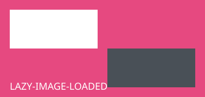

用例：① screenshot --selector #normal 常规视口 clip（尺寸≈420x140）；
② 页面顶部/中部 --selector #tall 越界路径截全 3000px（顶部像素应为绿色标记带 #00ff00）；
③ --selector #below 折下自动滚动 + 懒加载图（图首像素应为品红 #e64980，非空白）；
④ 不存在/零尺寸元素仍报明确错误；⑤ 无 selector 整视口截图。
观察点：sticky(#sticky)/fixed(#fixed-badge) 在越界截图里的成像位置。
TALL-BODY-LINE 1：超高元素内部正文，用于核对截图像素内容。
TALL-BODY-LINE 2：超高元素内部正文，用于核对截图像素内容。
TALL-BODY-LINE 3：超高元素内部正文，用于核对截图像素内容。
TALL-BODY-LINE 4：超高元素内部正文，用于核对截图像素内容。
TALL-BODY-LINE 5：超高元素内部正文，用于核对截图像素内容。
